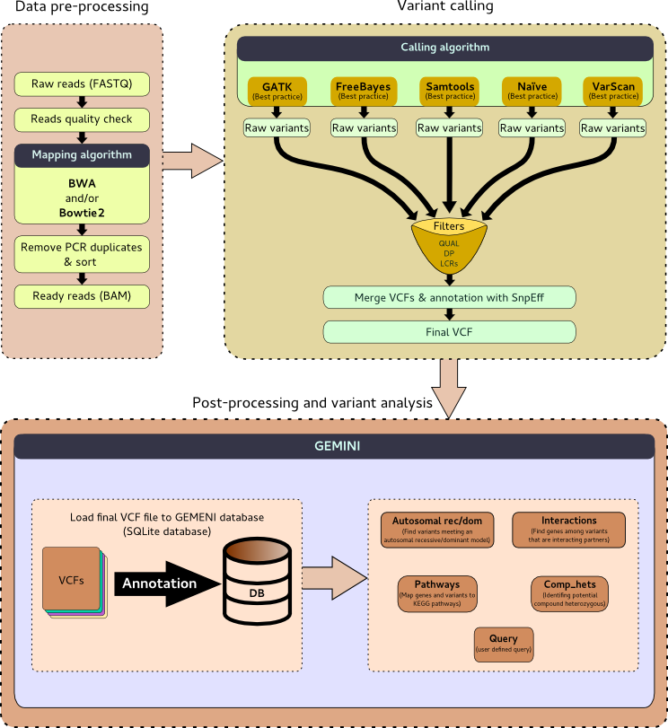

<!doctype html>
<html lang="en">

	<head>
		<meta charset="utf-8">

		<title>Training course for Exome sequencing</title>

		<link rel="stylesheet" href="../../shared/reveal.js/css/reveal.css">
		<link rel="stylesheet" href="../../shared/reveal.js/css/theme/simple.css" id="theme">

		<!-- Code syntax highlighting -->
		<link rel="stylesheet" href="../../shared/reveal.js/lib/css/zenburn.css">

		<link rel="stylesheet" href="../../shared/css/custom.css" id="theme">

		<!-- Printing and PDF exports -->
        <script>
          if( window.location.search.match( /print-pdf/gi ) ) {
            var link = document.createElement( 'link' );
            link.rel = 'stylesheet';
            link.type = 'text/css';
            link.href = '../../shared/reveal.js/css/print/pdf.css';
            document.getElementsByTagName( 'head' )[0].appendChild( link );
          }
        </script>
		<!--<script>
            if (window.location.search.match(/print-pdf/gi)) {
                document.write('<link rel="stylesheet" href="css/pdf.css" type="text/css">');
            }
        </script>-->

		<!--[if lt IE 9]>
        <script src="reveal.js/lib/js/html5shiv.js"></script>
        <![endif]-->
	</head>

	<body>
		<div class="reveal">

			<!-- Any section element inside of this container is displayed as a slide -->
			<div class="slides">
                <section data-markdown>
                    <script type="text/template">
                        ## Welcome!

                        

                        The easiest way to **navigate** this slide deck
                        is **by hitting `[space]` on your keyboard**

                        You can also navigate with arrow keys, but be careful because some
                        slides can be nested inside of each other (vertically)
                    </script>
				</section>

				<section data-markdown>
                    <script type="text/template">
                        # Exome sequence data analysis
                    </script>
				</section>

                <section>
                  <section data-markdown>
                    <script type="text/template">
                      ### Exome sequencing

                      = Whole exome sequencing (WES or WXS)

                      Sequencing of all expressed protein-coding genes in a genome
                    </script>
                  </section>

                  <section data-markdown>
                    <script type="text/template">
                      ### Exome in Humans

                      - ~180,000 exons
                      - 1% of the human genome
                      - ~30 million base pairs
                    </script>
                  </section>

                  <section data-markdown>
                    <script type="text/template">
                      ### Goal of exome sequencing

                      Identify genetic variation that is responsible for both Mendelian
                      and common diseases without the high costs associated with
                      whole-genome sequencing

                      <aside class="notes">
                          Exome sequencing is the most efficient way to identify the
                          genetic variants in all of an individual's genes
                      </aside>
                    </script>
                  </section>

                  <section data-markdown>
                    <script type="text/template">
                      ### Limits

                      Exome sequencing can not identify genetic variation in

                      - All genes
                      - Mitochondrial genes
                      - “Structural variants”
                      - Triplet repeat disorders
                      - Other copy number variants
                      - Introns
                      - “Uniparental disomy”
                      - Control sequences
                      - Epigenetic changes
                      - Gene-gene (epistatic) interactions

                    </script>
                  </section>

                </section>

                <section>
                  <section data-markdown>
                    <script type="text/template">
                      ## 2 tutorials for training on exome sequencing data analysis
                    </script>
                  </section>

                  <section data-markdown>
                    <script type="text/template">
                      ### Same goal

                      Identify and annotate genetic variants in a family with two
                      parents and a child exome data
                    </script>
                  </section>

                  <section data-markdown>
                    <script type="text/template">
                      ### Similar data analysis approach

                      
                    </script>
                  </section>

                  <section data-markdown>
                    <script type="text/template">
                      ### 2 tutorials

                      - [Introductory tutorial](../tutorials/Exome-Seq.md)
                      - [Detailed tutorial](../tutorials/Diploid-variant-calling.md)
                    </script>
                  </section>
                </section>
			</div>

		</div>

		<script type="text/javascript" src="../../shared/reveal.js/lib/js/head.min.js"></script>
        <script type="text/javascript" src="../../shared/reveal.js/js/reveal.js"></script>
        <script type="text/javascript">
            Reveal.initialize({
                slideNumber: !window.location.search.match(/print-pdf/gi),
                history: true,

                theme: Reveal.getQueryHash().theme,
                transition: Reveal.getQueryHash().transition || 'concave',

                dependencies: [
                    { src: '../../shared/reveal.js/lib/js/classList.js', condition: function() { return !document.body.classList; } },
                    { src: '../../shared/reveal.js/plugin/markdown/marked.js', condition: function() { return !!document.querySelector( '[data-markdown]' ); } },
                    { src: '../../shared/reveal.js/plugin/markdown/markdown.js', condition: function() { return !!document.querySelector( '[data-markdown]' ); } },
                    { src: '../../shared/js/highlight.js', async: true, callback: function() { hljs.initHighlightingOnLoad(); } },
                    { src: '../../shared/reveal.js/plugin/notes/notes.js', async: true },
                ]
            });
        </script>

	</body>
</html>
